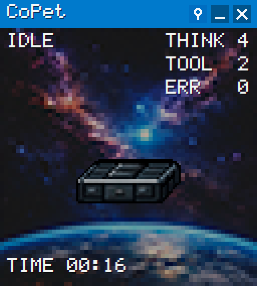

CoPet
A tiny desktop satellite for your Codex sessions.
Download
(Windows)
GitHub
reacts to thinking, tools, done, error
lives on your desktop
local-first
made for Codex in VS Code
by roklend
·
Telegram
·
GitHub
